|
|||||
|
ORDER
AND EQUIVALENCE OF RATIONAL
|
|||||
|
THOMAS R. POST,
University of Minnesota
|
|||||
|
|||||
|
In an earlier report on children's thinking when dealing with tasks concerned with the order or equivalence of rational numbers (Behr, Wachsmuth, Post, & Lesh, 1984), we looked across children at the various strategies they appeared to use in performing the tasks. In this report, by taking a look at how two children approached the tasks at various times, we attempt to provide a deeper analysis of their thinking and how their strategies changed or remained the same. An 18-week teaching experiment was conducted in schools located in St. Paul, Minnesota, and DeKalb, Illinois. The subjects were 12 fourth graders, 6 at each site. The instructional program consisted of 13 lessons, from 3 to 8 days each. Working individually and in a group, the children were introduced to the part-whole interpretation of rational number by means of circular and rectangular pieces of laminated colored paper as well as other manipulative aids. For details on the instructional sequence, see Behr et al., 1984. Each child was interviewed individually on 11 separate occasions at intervals of approximately 8 days. The analysis in this report is based on transcriptions of recordings of the interviews with two of the children and on notes taken during the lessons by a participant observer. THEORETICAL ISSUES Our analysis indicates that the development of children's rational number understanding appears to be related to three characteristics of thinking: (a) flexibility of thought in coordinating translations between modes of representing rational numbers, (b) flexibility of thought for transformations within a given mode of representation, and (c) reasoning that becomes increasingly free from a reliance on concrete embodiments of rational numbers. Thought Flexibility in Coordinating Translations Children's initial understanding of a fraction - symbolized by a mathematical symbol of the form m/n, where m and n are natural numbers - is not derived from the natural numbers m and n. Nor is their initial comprehension of a mathematical symbol of the form m/n itself derived from the natural numbers m and n. Instead, children's understanding of both the fraction symbolized by m/n and their comprehension of the symbol itself are derived from embodiments - which we denote as (m)/n - of the fraction, such as a picture of an object partitioned into n equal pieces with m of them shaded, or a set of n white poker chips with m of them covered with red chips. For children to derive meaning from embodiments of fractions, they need information about existing agreements for how fractions are embodied with pictures and manipulative objects. To comprehend a mathematical symbol of the form m/n, they need information about existing agreements for identifying the symbol associated with given pictorial and manipulative displays. Taken together, information about these agreements is adequate to make translations in either direction (see Figure 1) between the mathematical symbol representation and the embodiment representation. The extent to which children can indeed make these directional translations is indicative of their personal understanding of the fractions involved. 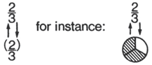 Figure 1. The Translation between mathematical symbol and embodiment. To use such embodiment-based knowledge in making a judgment about the order relation between two fractions such as 2/5 and 2/3, a child has to recognize that a smaller part of a unit (e.g., a circular region) is covered in (2)/5 than in (2)/3. This judgment about fraction embodiments is translated into a judgment about the fractions 2/5 and 2/3. The translation process is more complex than a cursory glance might suggest. It appears that, at a minimum, the child must (a) perform bidirectional translations between 2/5 and (2)/5 and store this information in short-term memory (STM), (b) perform bidirectional translations between 2/3 and (2)/3 and store this information in STM, (c) make a judgment about (2)/5 and (2)/3 and store this information in STM and (d) coordinate the information from (a), (b), and (c) to infer a judgment about the order relation on 2/5 and 2/3 (Figure 2). In the context of our instruction and interviews, a good answer that reflected this coordination would likely be accompanied by an explanation such is "Two fifths is less than two thirds because there are two pieces in each, but the pieces in two fifths are smaller, so a smaller amount of the unit is covered for two fifths." 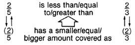 Figure 2. Use of embodiment-based knowledge in judging fraction order. It is this coordination of information that we refer to as coordinating translations between the representational modes of mathematical symbols and fraction embodiments. The comparison process also involves translating a relational judgment on given fraction embodiments to (or from) a relational judgment on the fractions embodied. Further, the process often involves relating the physical transformation among, and within, fraction embodiments to a corresponding symbolic arithmetic operation. Thought Flexibility for Transformations Within a Mode of Representation To operate with mathematical symbols for fractions, one must be adept at making transformations within the symbolic mode; similarly, operations with embodiments for fractions require transformations within the system of embodiments. This notion can be illustrated with tasks involving the recognition or the construction of (a) a mathematical symbol for a fraction, and (b) an embodiment that represents a fraction equivalent to the one given. For example, solving the open sentence 4/6 = []/3 within the representational system of mathematical symbols can be done by means of a transformation algorithm, such as dividing 4 and 6 each by 2. Similarly, recognition that 4/6 = 2/3 can be accomplished with the same transformation. To solve the open sentence within the representational system of fraction embodiments would require the ability to transform (4)/6 to (2)/3. This transformation involves either a physical or mental (i.e., imagined) repartitioning (Figure 3). It is the ability to make these transformations within a representational system that we refer to as thought flexibility for transformations. Flexibility is used in this context to refer to the adeptness, insight, or understanding that a child displays in making these transformations. 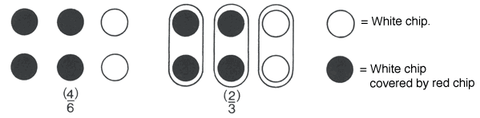 Figure 3. Poker chip embodiment used to solve the open sentence 4/6 = []/3 We view thought flexibility for transformations within representational modes as related to thought flexibility in coordinating translations between representational modes. For example, the transformation of a chip display for 4/6 to a chip display for 2/3 should facilitate the understanding that 4/6 = 2/3 in the symbolic mode. Such understanding requires the coordination of three sources of information - namely, (a) the observation that (4)/6 and (2)/3 have equal amounts covered, (b) the translation of (4)/6 to 4/6, and (c) the translation of (2)/3 to 2/3 - and it provides for the ability to make the subsequent inference that 4/6 = 2/3. The ease with which children can accomplish these transformations, translations, and inferences is related to their ability to understand at the symbolic level issues of the order and equivalence of fractions. Limited flexibility of thought in accomplishing any of (a), (b), or (c) above places extra demands on the child's information processing capacity and inhibits the acquisition of flexibility of thought in making transformations within the representational mode of mathematical symbols. Progressive Independence of Thought from Embodiments A third characteristic of thought that seems fundamental for children's success with tasks on order and equivalence, especially as those tasks become more complex, is the progressive independence of thought from the embodiments used to represent fractions. For an illustration, we consider the problem of ordering 5/6 and 2/3. If a child compares sectors of a given circular unit, the fractions can be ordered by comparing the absolute size of the area covered. The ultimate aim of instruction, however, is for children to understand the order relation between 5/6 and 2/3 without making a reference to a physical display. Children should eventually become able to make a judgment based on the relation (ratio) between 5 and 6 and between 2 and 3. This judgment requires that they observe that 5/6 is relatively larger than 2/3 regardless of the common unit chosen. The need for children's understanding of rational number concepts to accommodate successive abstraction suggests that thought originally directed at actions on an embodiment must become successively more independent of that embodiment. Children can be helped toward thought that is independent of embodiments by becoming involved in situations that require a decision in advance (a plan) as to how to construct a manipulative display or to otherwise illustrate a fraction idea. An example is the use of a discrete model such as poker chips to determine the order of 5/6 and 2/3 (Figure 4). With chips, there is no predetermined unit; the child must choose a number of chips to serve as a unit for representing both fractions. A child might choose the unit by mentally manipulating various sets of chips, realizing that a set of 6 (or a multiple of 6) chips could be grouped, and regrouped, into 6 subsets and 3 subsets. That is, the child predetermines by mental manipulation, rather thin by trial and error, that a unit of 6 (or a multiple of 6) is necessary. From this point on, the child might use (5)/6 and (2)/3 to determine that 5/6 is greater than 2/3. The important point is that these perceptually facilitating embodiments can be obtained only if information about the fractions is used in planning both displays in a coordinated way. A comparison of the embodiments (5)/6 and (2)/3 in terms of sixths is less likely to occur if the child does not anticipate a need for sixths before constructing the embodiments. In this case, the child's understanding of the concepts 5/6 and 2/3 and his or her understanding of fraction equivalence assists in the choice of an appropriate unit. Such understandings and anticipations develop into thought that is independent of the actual use of embodiments for fractions. For children who have progressed to that point, the use of embodiments appears as a confirmation of a prejudgment based on a mental manipulation. This use of embodiments is both a more sophisticated and more desirable form of reasoning than relying on embodiments for support in making a judgment. 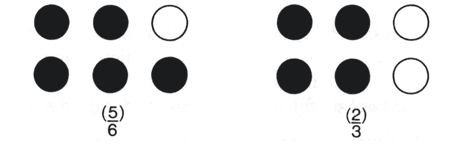 Figure 4. Poker chip embodiment used to order 5/6 and 2/3. SUPPORTING DATA We present data from
two fourth graders to exemplify the three major characteristics of thinking
just discussed. Passages from interview transcriptions and the observers
notes that illustrate the thinking strategies the children employed have
been selected. Our major intent is to describe how different thought strategies
affect the two children's progress in tackling specific and successively
more complex tasks on the order and equivalence of rational numbers. The
data have limitations; they do not illustrate why the children exhibited
different, more-or-less fully developed strategies, nor do they bear on
the questions of how less well-developed strategies (more dependent on
concrete materials) might be improved and whether instruction might be
delayed for some children. The reader will also observe that even under
the conditions of instruction in the teaching experiment--which employed
a rich diversity of manipulative aids, placed a heavy emphasis on concept
development, and took more time than traditional instruction-many rational
number concepts remained exceedingly difficult for these children. Thought Flexibility in Coordinating Translations Differences between Bob and Jane's ability to make meaningful translations were observed early in the instruction. 1. (Interview following
2 days of instruction) From this point on, Bob made no further errors like that in his first statement. He correctly related the order of two fractions to the compensating relation between the size and number of equal-sized parts needed to cover a unit. A typical response from Bob to subsequent questions on order was: "Three fourths is greater [than 3/9]. If you take two units and cut one into fourths and the other into ninths, fourths are gonna be bigger because there is less of them to cover the unit." Note also Bob's ability to coordinate the inverse relation between the number of parts into which the whole is divided and the resulting size of each part. Bob's ability to interrelate the concrete and symbolic modes of representation was in sharp contrast to that of Jane, who in Excerpt 2 exhibits difficulty in making translations from the descriptive language of manipulative aids to the more formal symbols: 2. (Classroom observation
during the fourth day of instruction) According to our analysis
of coordinating translations, for Jane to accomplish the translation from
"one orange is greater than one purple" to one fifth is greater
than one tenth," she must (a) translate one orange part to one fifth
and store this in STM, (b) translate one purple part to one tenth and
store this in STM, (c) observe that one orange part is greater than one
purple part, and (d) coordinate (a), (b), and (c) to translate the judgment
about the relation between the orange and purple parts (embodiments) to
a relational statement about one tenth and one fifth. Jane gave evidence
that she was able to accomplish (a), but whether she accomplished (b)
is not known. In any case, she was unable to accomplish the coordinated
translation. 3. (Interview after
7 days of instruction) In Excerpt 3, we see
two potential explanations for Jane's difficulty in ordering fractions
at that time. In her first response is evidence that any mental images
based on the manipulative aid that she might have developed to suggest
the order of 1/5 and 1/9 were dominated, overpowered, by her knowledge
of the ordering of the whole numbers 5 and 9 (see Behr et al., 1984, for
a discussion of the whole-number-dominance strategy). The second interaction
between the interviewer and Jane suggests that Jane was able to make the
1/5 to (1)/5 and 1/9 to (1)/9 translations. In her third response we observe
a possible linguistic interference in her ability to coordinate the translations;
she appeared to confuse more in reference to number of parts with
bigger and greater in reference to size of parts and fractions,
respectively. Even with the embodiment present, Jane did not give evidence
that she perceived the compensating relation between the number and size
of equal parts in a partition. Whether the interference came from the
linguistic similarity of more and greater or from an over
generalized schema for ordering whole numbers is not clear (see Behr et
al., 1984). 4. (Classroom observation
after about 25 days of instruction) Jane's vacillation indicated her uncertainty as to how to determine which of two fractions is less. In her second response she initially made a distinction between whole numbers and fractions, but that was not sufficient. It can, however, he taken as evidence that she was gaining at least implicit knowledge that her thinking about the order of the whole numbers 3 and 6 must be modified to accommodate the ordering of 1/3 and 1/6. In the same response Jane also mentioned "pieces" and hesitantly indicated that (I)/6 pieces are bigger than (1)/3 pieces. It is apparent that she was still having difficulty coordinating the information involved in the translations between symbol and embodiment with the information involved in the physical comparison of parts of a whole. Some directed reference to embodiments facilitated Jane's thinking, as reflected in her third response. She was able to accomplish the coordinated translation when she began to talk directly in terms of the size of pieces, her memory apparently aided by reference to the embodiment. When the discussion shifted to the nonunit fractions 2/6 and 2/3, Jane did not visualize the size of the parts. Rather, she adopted a rule of multiplying numerator and denominator so that the larger the product, the smaller the fraction. Although her verbalization of this implicit rule referred to "pieces," the rule had no exact counterpart in the embodiment. Jane's difficulty in relating and coordinating visual and symbolic information persisted into Lesson 9. In a worksheet problem, the children were asked to order three pictures to show the order of fractions from smallest to largest (see Figure 5). Jane's behavior is presented in condensed form in Excerpt 5.
5. (Classroom observation
during the 38th day of instruction) Thought Flexibility for Transformations Within a Mode of Representation Differences in the flexibility of thought shown by Bob and Jane for transformations within the embodiment system of representation are evident in a discussion about a paper-folding display (see Figure 6). The discussion is presented in condensed form in Excerpt 6. How this difference affected each child's development of flexibility within the mathematical system of representation can be observed by comparing their progress in subsequent excerpts. 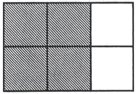 6. (Classroom observation
on about the 15th day of instruction) Jane is asked the same question and does not respond. Asked if 2/3 covers more than 4/6, she still does not respond. Instructor prompts by pointing to the shaded part of the figure and counting-again, no response. Jane seems confused by the simultaneous presence In the display of 3 parts with 2 shaded and also 6 parts with 4 shaded. In Bob's response we see evidence of his ability to observe that an embodiment for 2/3 can be transformed into an embodiment for 4/6 and vice versa. He is able, because of two interpretations of the partition (2 of 3 and 4 of 6), to associate both fractions to the display. Moreover, the equivalence of the shaded areas is more salient for Bob than the nonequivalence of the partition. Therefore, he is able to conclude that 2/3 and 4/6 are equal. Understandings such as this very likely provide the cognitive structure that allows him to begin to perceive that each of the symbols 2/3 and 4/6 is transformable to the other. Jane's confusion suggests that with respect to an imagined or physical transformation of the embodiment, her thought is inflexible. This inflexibility inhibits her in perceiving that interpretations of 2 of 3 parts and 4 of 6 parts are simultaneously (or successively) possible. In turn, she is unable to simultaneously attach the two fractions 2/3 and 4/6 to the display. Jane's lack of flexible thought for this transformation is also manifested by her inability to imagine the removal (unpartitioning) or addition (repartitioning) of partitioning lines in the display. Her perception of the partition lines may dominate her perception of the equivalence of the areas shaded (Behr, Lesh, Post, & Silver, 1983). These difficulties--each a manifestation of inflexible thought for embodiment transformations-inhibit the important element of area equivalence from being salient for Jane. As a result, she is unable to deal with the question of the equivalence of 2/3 and 4/6 by using the embodiment as the basis for her thought. The following observations (Excerpts 7 and 8) demonstrate clearly Bob's thought flexibility for transformations between two discrete (chip) embodiments and his progressively more flexible thought for transformations on mathematical symbols for fractions. 7. (Classroom observation
on about the 33rd day of instruction) 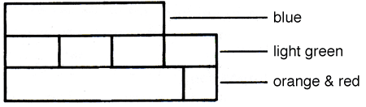 Figure 7. Rod display to show 3/4. Bob: [Explaining to observer] Both show three fourths and nine twelfths. 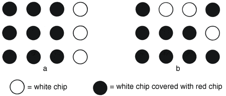 Figure 8. Bob's 12-chip displays in response to rod display.
8. (Classroom observation
during the 30th day of instruction) 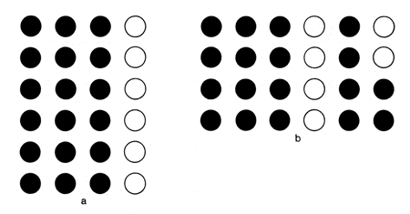 Figure 9. Bob's 24-chip displays to show 3/4. In Excerpt 7, Bob solved the question about eighths abstractly--evidence that he was acquiring progressively more flexibility for making transformations of mathematical symbols. The extent of Bob's thought flexibility can be seen in Excerpt 8, which also presents evidence about how his flexibility for embodiment representations facilitates this thought flexibility for mathematical symbol variation. It seems unlikely that his generation of the mathematical symbols of 1 1/2 halves and 4 1/2 sixths as equivalents of 3/4 would have occurred in the absence of an embodiment basis for his thought. Bob's flexible thought and consequent success with fraction equivalence is in contrast to Jane's thought. Her inability to accomplish transformations on embodiments clearly inhibited her progress on fraction equivalence tasks. 9. (Classroom observation
during the 33rd day of Instruction) 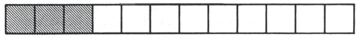 Figure 10. Worksheet task on fraction equivalence.
Although in a previous problem Jane had been able to find abstractly an equivalent fraction in higher terms (the number of 12ths equivalent to 4/6), she was unable here to make any progress toward solving the lower term problem 3/12 = []/4. Elsewhere, rigidity was observed in Jane's interpretation and production of chip displays. She could group a set of chips to show a fraction in lower terms when it was the one given and then reinterpret the grouping to determine the higher terms fraction; but when given a higher terms fraction, she was unable to regroup the chips to determine the equivalent lower terms fraction. What specifically do the observations suggest about Bob's and Jane's prospects for developing skill in using transformation algorithms for generating fractions equivalent to the one given or for testing the equivalence of two fractions; that is, for performing abstract fraction-equivalence tasks? Embedded in Bob's realization that 3/4, 6/8, 9/12, 1 ½ halves, and 4 ½ sixths are numerous symbolic representations for three fourths is the information that he has developed firm cognitive structures for fraction equivalence. At a minimum, the structures allow for thinking of a fraction in many symbolic forms. Surely this type of structure for the concept of equivalent fractions will provide the necessary base on which meaningful algorithmic skills can be developed. The absence of evidence for such cognitive structures suggests the opposite conclusion for Jane at this point in her development. We emphasize that our data do not suggest, nor is it our interpretation, that Jane will not be able to develop and perform at Bob's level. The point to be made is that thought flexibility for transformations on embodiments and for transformations on mathematical symbols are basic cognitive skills for success with tasks on the order and equivalence of fractions. Moreover, it is likely that thought flexibility for transformations on embodiments is a precursor to thought flexibility for transformations of mathematical symbols. Progressive Independence of Thought from Embodiments In Lesson 6, Bob's thinking about equivalent fractions was still embodiment dependent: 10. (Classroom observation
during the 19th day of instruction) Evidence that Bob's thinking was becoming less embodiment dependent is provided by an activity that occurred later in the same lesson: 11.
(Classroom observation during the 21st day of instruction) Thus the notion of
equivalent fractions seems to be evident in Bob's thinking at this point,
but it was still tied to the concrete. On writing the fractions in Excerpt
11, he said that more equivalent fractions exist. He did not, however,
mention or write the fraction 4/8, which was not represented by the rods-evidence
of the concrete nature of his thinking. 12. (Classroom observation
during the 28th day of instruction) 13. (Interview after 40 days of instruction) Interviewer:
[Writes "3/4 = 9/[]"] Find the number which goes in the box
so the fractions are equal. Bob's progression to embodiment-independent thinking can be contrasted with Jane's thinking, which remained embodiment dependent. 14. (Classroom observation
during the 33rd day of instruction) Jane: One, two [pointing at groups], three, . . . , ten; one, two, three, four [writes "4/10"]. One, two [pointing to single dots], three, . . . , twenty; one, two, three, . . . , eight [writes "8/20"]. 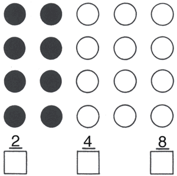 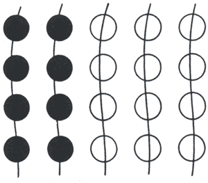 Figure 13. Jane's marks to find 2/5 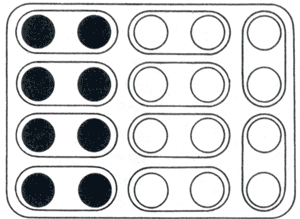 Figure 14. Jane's marks to find 4/10. Jane seemed to need
the deliberate partitioning and counting to organize her thinking in this
stepwise fashion. Her actions on the display directed her thought. There
was no evidence of a plan to reach the solutions 2/5, 4/10, and 8/20 with
the manipulative aid to verify her answer; she used the picture to generate
each equivalent fraction. 15. (Classroom observation on about the 40th day of instruction) Jane makes several
symbol-picture matchings, one, of which results 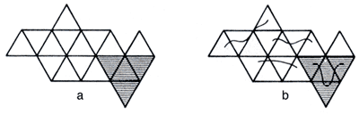 Figure 15. Pictures from worksheet on matching symbols and pictures. Jane's dependence
on the display resulted in an incorrect symbolic statement, one that contradicted
the statement 4/12 = 1/3 that she had written earlier. When the instructor
queried her about the picture, she recognized it as 4/16. She changed
the label she had written under the picture by crossing it out and writing
"4/16." The statement 4/12 = 1/4 remained unchanged. 16. (Final interview
after 18 weeks, of instruction; no pictures or manipulative aids were
present) DISCUSSION We open the discussion with two remarks concerning important phenomena identified in the present paper and in Behr et al. (1984) concerning children's performance on tasks concerning the order and equivalence of rational numbers. First, children's understandings about ordering whole numbers often adversely affect their early understandings about ordering fractions. For some children, these misunderstandings persist even after relatively intense instruction based on the use of manipulative aids (see Jane's first response in Excerpt 16). With whole numbers, children can deal with order tasks in two ways that correspond to the cardinal and ordinal aspects of number, respectively: (a) they can compare the "bigness" of two numbers by matching elements of finite sets, or (b) they can make use of the counting sequence, deciding which number is smaller according to which comes first (Resnick, 1983). The direct comparison methods for ordering whole numbers are inadequate for dealing with fraction-ordering tasks because fraction and fraction order require the following complex understandings: (a) fraction size depends on the mention between the two whole numbers in the fraction symbol (a ratio); (b) there is an inverse relation between the number of parts into which the whole is divided ant the resulting size of each part; (c) when fractions have like denominators, there is a direct relation between the number of "distinguished" parts and the order of the fractions; (d) when fractions have different numerators and denominators, judgments about their order require and extensive and flexible use of fraction equivalence; and (e) the density of the rational numbers implies the counterintuitive notion that there is no "next" fraction. Second, linguistic
considerations contribute to some children's misunderstanding of the ordering
and equivalence of fractions. The words more and greater
(and their counterparts less and fewer) cause difficulty
for some children because more can mean more parts in the
partitioned whole or more area covered by each part. Similarly,
greater can mean a greater number of parts in the partitioned whole
or a greater fraction size. A similar confusion exists with respect to
size and amount, as illustrated by children who, when asked
which of two fractions is less, reply, "Do you mean in size [e.g.,
size of each subdivision] or in amount [e.g., number of subdivisions]?" The progression in Bob's thought indicated that he appeared to acquire various abilities related to thought flexibility in coordinating translations between nodes, to thought flexibility for transformations within nodes, and to progressive independence from embodiments. He appeared to acquire tile following abilities, in approximately the order given:
Abilities 1 and 2 may be related and may emerge in parallel rather than sequentially, but together they likely lead to Ability 3. There seems strong support in the data for the hypotheses that Ability 3 is a prerequisite to Abilities 4 and 5 and that Abilities 4 and 5 develop into Ability 6. We have hypothesized that thought flexibility in coordinating translations between the representational systems of fraction embodiments and mathematical symbols for fractions is a prerequisite to more abstract embodiment-independent thought. The data indicate that at one point a child can make a single bi-directional translation but is unable to keep this information In STM while making a second bi-directional translation. Later, the child is able to make the two bi-directional translations and the relational judgment between embodiments but cannot coordinate this information to make a relational inference front the embodiments to the fraction symbols. Whether a bi-directional translation is accomplished and stored in STM as one or two separate cognitive units (i.e., two unidirectional maps) is not determinable from our data. If such translations are stored as two units, however, the whole sequence of coordinating the translations may exceed STM capacity. Whatever the cause, the child who cannot coordinate such translations is seriously handicapped in abstracting information from the embodiment system of representation that could be used in making judgments, performing transformations, or doing operations in the mathematical symbol system of representation. This handicap is especially severe it one expects a meaningful performance. Such a child might need more practice ill making paired unidirectional translations between modes of representation until the translations became habituated, automated, and schematized. Thought flexibility for transformations within the fraction-embodiment mode of representation seems to facilitate thought flexibility for transformations within the mathematical symbol representational system. Children who have difficulty with transformations on embodiments (see Excerpt 9) almost surely will have difficulty making meaningful transformations on mathematical symbols. Some children have difficulty in modifying partitions by either actual or imagined physical actions. How children might be aided in overcoming this difficulty his been addressed in part by Cramer, Post and Behr (1984), but questions remain for further research. REFERENCES Behr, M.J., Lesh, R., Post, T. R., & Silver, E. A. (1983). Rational number concepts. In R. Lesh & M. Landau (Eds.), Acquisition of mathematics concepts and processes (pp. 92-126). New York: Academic Press. Behr, M. J., Wachsmuth,
I., Post, T. R., & Lesh, R. (1984). Order and equivalence of rational
numbers; A clinical A clinical teaching experiment. Journal for Research
in Mathematics Education, 15, Cramer, K., Post, T. R., & Behr, M. J. (I 984). Perceptual cues and the quality of children's thinking in rational number situations. Unpublished manuscript. Resnick, I.. B. (1983). A developmental theory of number understanding. In H.P. Ginsburg (Ed.), The development of mathematical thinking (pp. 109 -IS 1). New York; Academic Press. [Received March 1983; revised May 1984] AUTHORS THOMAS R. POST, Professor of Mathematics Education, College of Education, 240 Peik Hall, University of Minnesota, Minneapolis, MN 55455 IPKE WACHSMUTH, Wissenschaftlicher Assistent, Fachbereich Mathematik, Universitat Osnabruck, Albrechtstrasse 28, D4500 Osnabruck, West Germany RICHARD LESH, Director, Division of Mathematics and Science, WICAT Systems, 11.0. Box 539, Orem, UT 84057 MERLYN J. BEHR, Professor,
Department of Mathematical Sciences, Northern Illinois University, *
We are indebted to the following people who assisted in
the research: Nik Azis Bin Nik Pa, Kathleen Cramer, Mary Patricia Roberts,
Robert Rycek, Constance Sherman, and Juanita Squire. An earlier version
of this paper was presented at the annual meeting of the American Educational
Research Association, New York, March 1982. The research was supported
in part by the National Science Foundation under Grants No. SED 79-20591
and No. SED 81-12643. Any opinions, findings, and conclusions expressed
are those of the authors and do not necessarily reflect the views of the
National Science Foundation. (top) |
|||||